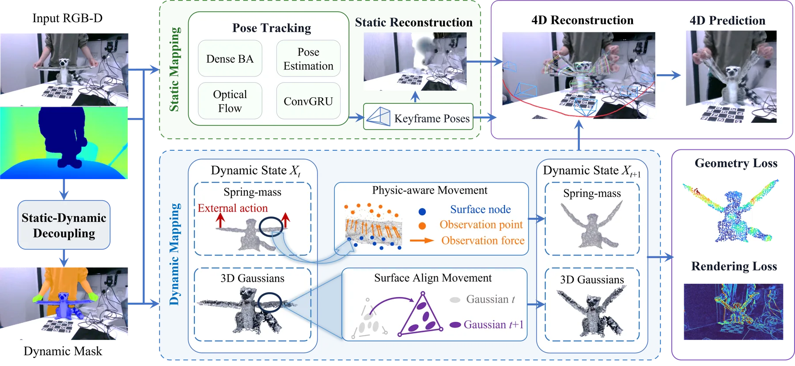
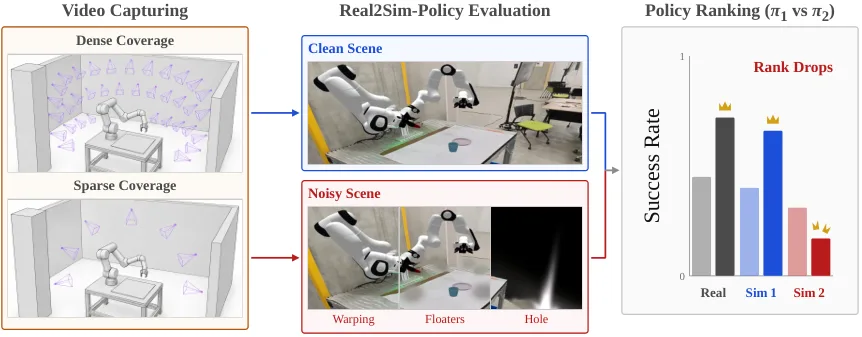
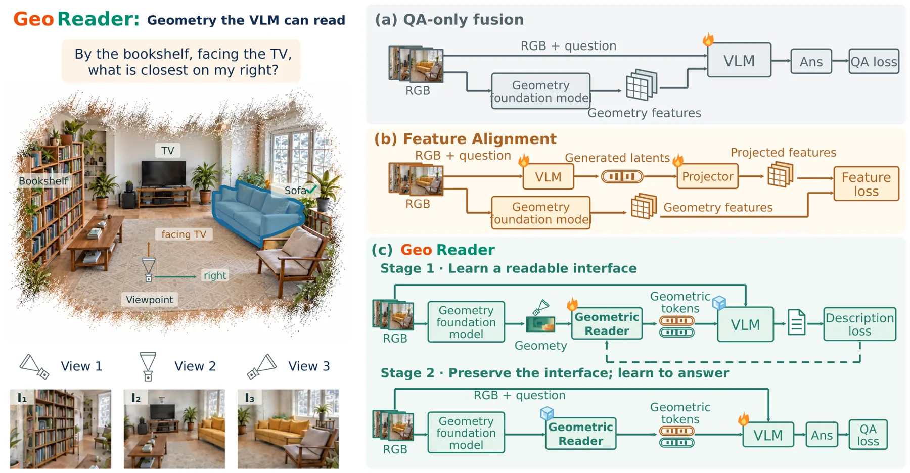
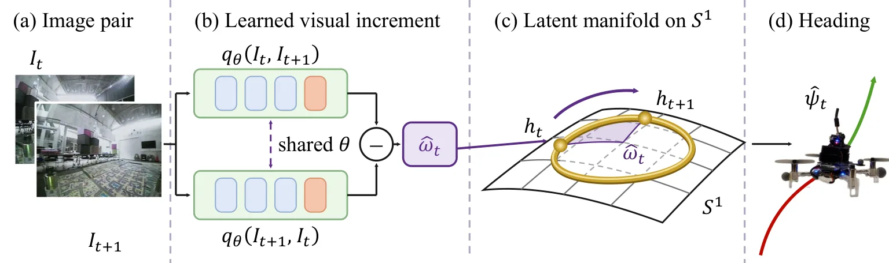

新论文 · 日期 2026-10-13 · score 23 · S层 · 3D/4D Spatial Perception · cs.RO
内容级别：完整单篇海报
作者：Guangming Wang, Zhishuo Liu, Haibing Wu, Wanli Ma
评分 23/10
4D Gaussian物理感知 SLAM可形变物体弹簧–质量模型虚拟观测力表面对齐正则动态场景TUM RGB-D
一句话工作总结：用语义掩码把场景切成静态背景（DROID-SLAM 式稠密 BA 跟踪）与动态物体（TRELLIS 网格 + 弹簧–质量模型）两支；物体的每个 Gaussian 以重心坐标与法向偏移绑定到规范网格面，观测几何以高斯核加权的虚拟观测力牵引节点、而非直接替换；物理参数在整个观测窗口按 Chamfer 距离叠加参数平滑项更新，表面对齐正则用 Charbonnier 罚项抑制法向漂移…
为了从运动相机的单目视频重建可预测的物理世界 4D 表示，本文联合重建动态 Gaussian 辐射场并推断其底层物理动力学。Physical SLAM 面向可形变物体，在给定 RGB-D 序列时构建 4D Gaussian 场并在受外力作用时预测未来状态。方法把场景拆成用于相机定位的静态背景 Gaussian 场与由弹簧–质量模型（弹性变形、惯性、阻尼）驱动的动态物体 Gaussian 场；为把视觉观测与物理动力学…
To reconstruct a predictive 4D representation of the physical world from monocular video captured by a moving camera, we jointly reconstruct dynamic Gaussian radiance fields and infer their underlying physical…

新论文 · 日期 2026-10-13 · score 18 · S层 · Geometry Foundation Models / 3D Foundation Models · cs.RO, cs.AI
内容级别：完整单篇海报
作者：Hiroki Nishizawa, Takehiko Ohkawa, Nicola Scianca, Tatsuya Matsushima
评分 18/10
Real2Sim3DGS策略评估排序一致性腕装鱼眼MuJoCo反事实伪影负结果
一句话工作总结：三场景（FR3 Flat / FR3 Duo / TX-G2）×三任务（Cup/Tape/Pen）×两策略 = 9 组两两排序，每格 20 次真机 + 80 次仿真 rollout；伪影条件在保持机器人、物理、碰撞几何、物体资产、初始条件、policy checkpoint、成功判据与 rollout 种子不变的前提下只改背景 Gaussian；降低覆盖条件则重训 3DGS（…
在真机上评估 VLA 策略成本高、耗时长且难以复现，因此 real-to-sim 仿真对可扩展评测至关重要。虽然 3D Gaussian Splatting 能快速完成 real-to-sim 场景生成，但「可靠策略评估所需的重建质量」尚未被量化。尤其是依赖腕装鱼眼相机的策略（如 YUBI 手持夹爪数据）在广角视图下极易暴露视觉伪影（孔洞、漂浮物），直接降低任务表现。为此作者提出 YUBI-Real2Sim，一个在…
Evaluating VLA policies on real robots is costly, time-consuming, and difficult to reproduce, making real-to-sim simulation essential for scalable evaluation. While 3D Gaussian Splatting (3DGS) enables rapid r…

新论文 · 日期 2026-10-14 · score 17 · S层 · Geometry Foundation Models / 3D Foundation Models · cs.CV
内容级别：完整单篇海报
作者：Soumick Sarker, Mengmi Zhang
评分 17/10
几何基础模型长时序 SLAM外部记忆联想记忆回访检测Sim(3) 修订冻结主干7-Scenes
一句话工作总结：SMORE = 空间脚手架 + 内容库，四步 Store/Retrieve/Verify/Revise。位置用多尺度周期模块、朝向用三个连续吸引子环编码，经固定随机投影到 1024 维后只保留 64 个最大激活做稀疏化；视觉用冻结 DINOv2 ViT-S/14 的 384 维描述子，与记忆状态做双向联想（RLS 增量更新）。检索只靠视觉 top-5 并过滤近邻/前窗/低相似…
在 3D 计算机视觉中，几何基础模型能从视频序列估计相机位姿与 3D 场景结构，但在长时序上保持一致的建图仍然困难。前馈模型把长序列当成相互独立的定长窗口处理再对齐，位姿与重建误差跨窗口累积；流式模型保留历史帧信息来引导未来预测，却无法在后续观测暴露错误时回头修正早先的估计。为此作者提出 Scaffold MemOry for Revision（SMORE），给现有几何基础模型配一套可修订的外部记忆用于长时序推理，…
Geometry foundation models estimate camera poses and 3D scene structure from video sequences, but maintaining consistent reconstructions over long horizons remains challenging. Feed-forward models process long…

新论文 · 日期 2026-10-11 · score 17 · S层 · Geometry Foundation Models / 3D Foundation Models · cs.CV
内容级别：完整单篇海报
作者：Wenjue Chen, Wenyue Chen, Heliang Zheng, Rongfei Jia
评分 17/10
三维生成稀疏视图重建点图锚点引导空间条件残差像素-体素对应视图选择Toys4K/GSO
一句话工作总结：问题：稀疏无位姿输入下「保留观测 + 补全未见」两个目标冲突，根因是相机相关重建与规范空间生成之间的坐标失配，以及「所有视图都参与条件化」带来的证据污染。做法：定义共享锚点引导空间（跟锚点视图方位角、物体保持竖直），其下重建分支（VGGT 基座）与生成分支（TRELLIS.2 基座）双向交换特征，结构引导的特征交互用一个「条件残差 + 时间门控」模块注入；再由点图预测出像素–…
从稀疏、无位姿图像生成完整的三维资产，需要既保留已观测几何、又补全未观测区域。联合重建与生成提供了兼顾两者的途径：重建恢复输入图像中观测到的几何，生成贡献学到的形状先验。然而，把相机相关的重建与规范空间的生成结合会引入坐标失配，使直接的几何交互变得困难；此外，用所有视图去条件化每个三维位置而不考虑各视图的相关性，会把有用的几何证据与无关图像内容混在一起，妨碍局部细节恢复。论文提出 UniForge3D，在共享的锚点…
Generating complete 3D assets from sparse, unposed images requires preserving observed geometry while completing unseen regions. Joint reconstruction and generation offers a way to address both goals: reconstr…

新论文 · 日期 2026-10-14 · score 15 · S层 · Geometry Foundation Models / 3D Foundation Models · cs.CV, cs.AI, cs.LG, cs.MM
内容级别：完整单篇海报
作者：Rong Li, Shijie Li, Jiangyong Huang, Lingdong Kong
评分 15/10
视觉语言模型几何表征空间推理可读性预训练问题条件化注入MindCube干预实验
一句话工作总结：两阶段：Stage 1 用冻结 VLM 的「几何描述」损失训练 Geometric Reader（深度用 Depth Anything 3 预测的位姿与深度，每视图每信号产出一个连续 token，pair 监督下只喂参考视图与目标视图以避免歧义）；Stage 2 冻结 Reader，先跑一次只含图像与问题的 read pass 得到 h_q，再用问题条件化门控 g_m=σ(R…
视觉语言模型（VLM）难以处理仍隐含在 RGB 观测中的度量与多视图关系。几何基础模型能从 RGB 恢复这些结构，但既有方法要么把估计特征与视觉 token 融合、只从问答中学习如何使用它们，要么把 VLM 的 latent 与几何特征对齐。然而「捕捉到几何」并不保证「会使用几何」：论文指出，把一个已发布的对齐模型的 latent 置零后，其准确率不变。GeoReader 提出让 VLM 学习它自己要读的几何表示。…
Vision-language models (VLMs) struggle with metric and multi-view relationships that remain implicit in RGB observations. Geometry foundation models recover this structure from RGB, but existing methods either…

新论文 · 日期 2026-10-13 · score 15 · S层 · Geometry Foundation Models / 3D Foundation Models · cs.RO
内容级别：完整单篇海报
作者：Zhaoliang Zhang, Chenhao Yu, Zhimin Shao, Xijun Liu
评分 15/10
动作条件化 4D 重建3D 场景流机器人控制空间–动作融合逆控制3D 基础模型多形态迁移
一句话工作总结：基于 4D 重建骨干 St4RTrack，把 3D VFM 解码器的「目标图像 token」替换为动作向量：动作经 MLP 变成 action embedding 作为 Query，图像 patch 特征作为 Key，Value 用地道门控做图像 token 与动作上下文的通道级融合，第二层再互换 Query/Key 以对齐长度，得到动作空间嵌入；训练期把该嵌入对齐到未来帧的…
精确控制不同形态机器人的运动是一个长期难题：为复杂机器人结构建模需要大量时间、专用传感器与人工标注。近期 4D 表示学习的进展提供了一条替代路线——能否用从 2D 观测中提升出来的 4D 特征，根据动作信号稠密地映射机器人的空间运动？为此作者提出 Act4R，一个建立在 3D 基础模型之上的框架，能在给定任意动作时预测机器人的 3D 场景流。Act4R 引入 Spatial-Action Encoder，把当前 2…
Precise control of movement across various robotic embodiments is a longstanding challenge. Modeling complex robotic structures requires significant time, dedicated sensors, and manual labeling. Recent advance…

新论文 · 日期 2026-10-12 · score 14 · S层 · Geometry Foundation Models / 3D Foundation Models · cs.CV
内容级别：完整单篇海报
作者：Lei Yang, Yuner Zhang, Ziyang Liu, Ziying Song
评分 14/10
公制尺度恢复几何基础模型VLM 先验免训练MetricBenchChamfer 距离ATE尺度先验
一句话工作总结：三模块免训练流程：VLM 给物体高度区间与置信 → 用 SAM 2.1 掩码把物体点与支撑面点投到共同重建系、逐帧独立平面拟合得到支撑法向、沿法向量物体重建高度、把先验转成尺度区间 [H⁻/h, H⁺/h] → 用带类别可靠性与先验置信权重的区间距离平方和（凸、分段二次）经黄金分割求单一标量。该标量同时作用于点图与相机平移，旋转、内参与相对几何不变。MetricBench（1…
以 GPT-6 Astra 为代表的多模态基础模型进展，使通用具身推理与规划的预期升温；但用互联网视频做具身预训练，需要可靠的物理尺度标注。视觉几何基础模型往往能在没有可靠公制尺度的情况下恢复场景结构与相机运动。论文表明：熟悉物体的不确定尺寸先验可以联合约束同一段重建的共享尺度。基于这一洞见，作者提出 UniMetric——一个通用且免训练的公制尺度恢复框架，不需要额外传感器或任务特定的公制监督。具体地，Metri…
Recent advances in multimodal foundation models, exemplified by GPT-6 Astra, raise the prospect of general-purpose embodied reasoning and planning. Using Internet videos for embodied pretraining calls for reli…

新论文 · 日期 2026-10-13 · score 10 · S层 · Geometry Foundation Models / 3D Foundation Models · cs.CV
内容级别：完整单篇海报
作者：Xiaohu Huang, Yumin Guo, Kai Han
评分 10/10
多模态大模型空间理解表征迁移跨视图一致性蒸馏与融合几何解码头NeurIPS 2025 扩展版
一句话工作总结：诊断（离线、不喂给 MLLM）：对 backbone 特征用**三维感知跨视图一致性** S̄（真实对应相似度减去错配相似度），七个模型上该分数与蒸馏增益强相关（Pearson r≈0.83、Spearman ρ=0.75），而三种二维特征结构指标 LDS/CDS/RMSC 至多弱相关（r≈0.26/0.22/−0.11）；对显式几何用深度（7Scenes 与室内平均 Abs…
空间理解是多模态大模型（MLLM）走向推理三维物理世界的必经一步，但其视觉预训练数据几乎全是 2D，因此 MLLM 处理的视觉 token 往往缺乏内在的三维结构。越来越多的方法通过从外部视觉或几何模型迁移表征来注入这种结构，并共同确立了「这种迁移有帮助」这一结论。这些方法背后是一个尚未被充分探讨的问题：**什么样的视觉表征才适合空间理解？**论文先把「迁移什么」与「如何迁移」分开，再把由此产生的差异回溯到表征自身…
Spatial understanding is a necessary step in moving multimodal large language models (MLLMs) toward reasoning about the 3D physical world. Their visual pretraining data, however, is almost entirely 2D, so the…

新论文 · 日期 2026-10-14 · score 10 · A层 · Embodied Navigation / VLN / Spatial Reasoning · cs.RO, cs.CV
内容级别：半海报
作者：Naitri Rajyaguru, Aryan Tajne, Stephen Jardim, Cornelia Fermuller
评分 10/10
视觉朝向估计S¹流形记忆反对称投影微型机器人GAP8序列反转不变性零样本真机迁移
一句话工作总结：做法：编码器把两张 320×320 RGB 通道拼接后经四层步长 2 卷积（8/12/16/24 通道，BN+ReLU）+ 全局平均池化得到 z∈R²⁴，再过两层 MLP（宽度 32）得 f∈R³²，最后由 gated 标量头输出有序转角 q；对前后两个时序方向各评估一次，取其反对称分量作为转角，并在 S¹ 上复合朝向；训练用 104 条序列（80 条 TartanAir 1…
微型机器人算力与内存有限，而视觉导航系统常常维护了超出任务需要的状态。论文追问：能否反过来让持续记忆由任务来塑形？作者提出 RingNav，一个 10.6k 参数的视觉朝向估计器，把记忆约束在圆周流形 S¹ 上：它只学习相邻图像之间的转角，而朝向直接在圆周上复合。在 TartanAir Visual SLAM Challenge 上，RingNav 相对同等规模的学习式记忆模型把平均绝对转角误差降低 27%、4 秒…
Tiny robots have limited computation and memory, yet visual navigation systems often maintain more state than a task requires. We ask whether persistent memory can instead be shaped by the task. We present \te…